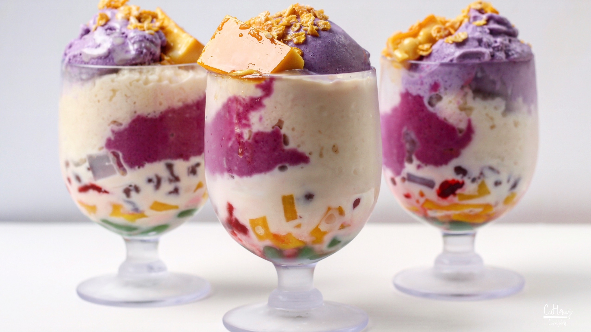

How to Make Halo-Halo

Instructions
- Use your shaved ice maker to make shaved ice
- In a serving glass, layer sweet red bean, sweet white beans, coconut gel, macapuno, and jackfruit.
- Top with shaved ice.
- Drizzle about one tablespoon of evaporated milk over shaved ice.
- Top with a scoop of ube ice cream and slices of leche flan. Enjoy immediately!
Tools and Equipment
- Serving Glass
- Measuring spoons
- Shaved Ice Maker (optional)
Ingredients
- Sweet red bean (munggo)
- Sweet white beans
- Coconut gel (nata de coco)
- Macapuno (gelatinous coconut string)
- Fresh or canned jackfruit, cut into chunks
- Shaved ice
- Leche Flan
- Evaporated milk
- Ube ice cream
Nutritional Facts
- Serving Size: 1 cup
- Calories: 153
- Sugar: 19 g
- Sodium: 65 mg
- Fat: 6 g
- Saturated Fat: 4 g
- Unsaturated Fat: 2 g
- Trans Fat: 0 g
- Carbohydrates: 23 g
- Fiber: 1 g
- Protein: 3 g
- Cholesterol: 25 mg